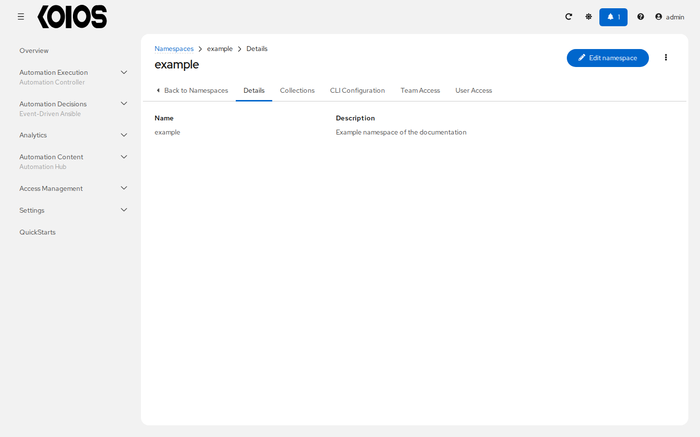
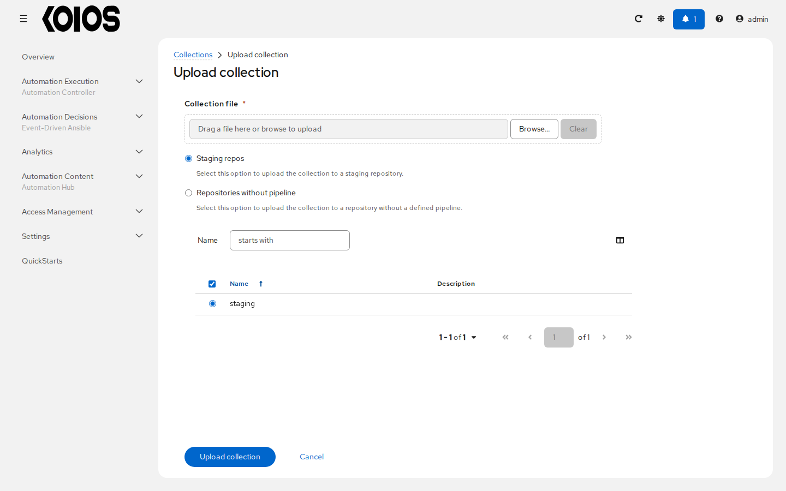
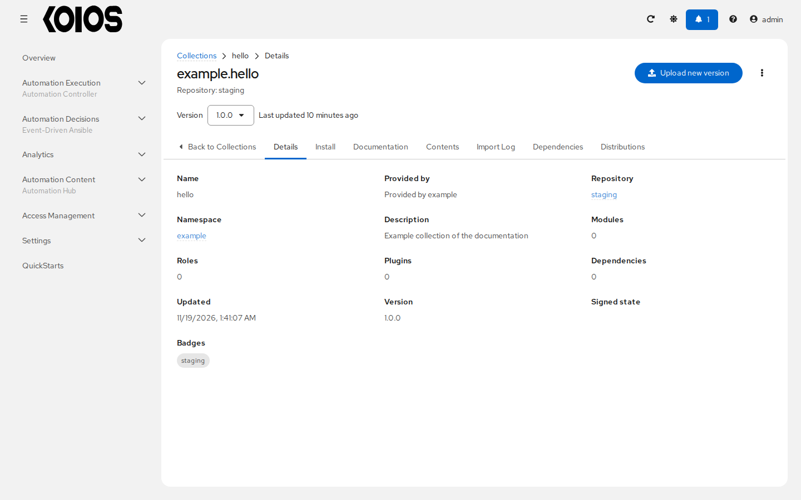
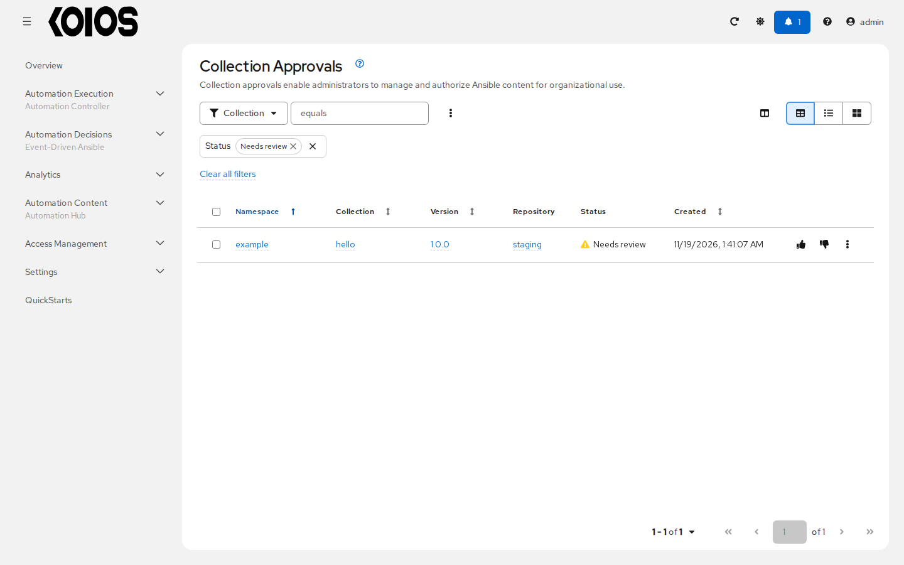
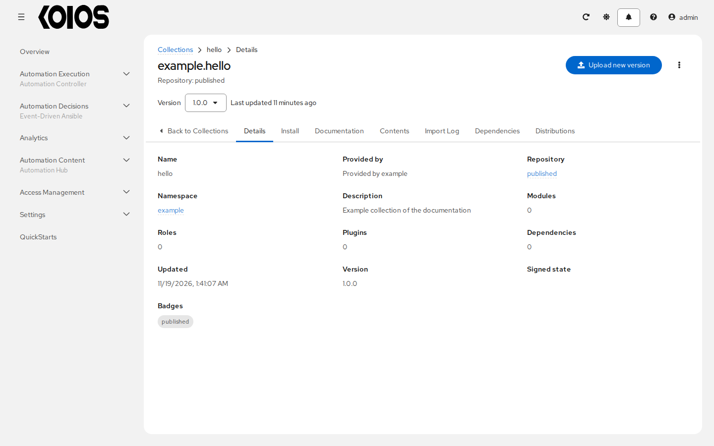

Publish your first collection
Build example.hello:1.0.0, publish it to the platform hub, approve it and install it from
published. This is a minimal content-distribution example; the scaffold does not implement a
module or role that performs automation.
The build, import, staging-to-published move and installation were validated on the Koios test platform on 2026-11-18 using the release execution environment and username/password authentication through the internal gateway. The examples below use the public HTTPS address: configure network access and certificate trust for your deployment. The UI paths are checked against the platform UI sources; the validation performed the upload and approval through the API/CLI.
Before you start
Have access to Koios Automation Platform and an account allowed to create a namespace, upload to it, approve content and read the published repository. These capabilities can belong to separate users in a real review workflow.
Use an environment with
ansible-galaxyavailable, such as the release execution environment or your Ansible workstation. The validated walkthrough used the release EE.Ensure the client can reach the hub through the gateway. If it uses a private CA, configure that trust in the client environment; do not disable certificate verification as the normal fix.
Use a new working directory. If
example.hello:1.0.0already exists on your hub, inspect it or choose a namespace/version of your own rather than overwriting someone else’s example.
1. Create a namespace
Open Automation Content > Namespaces and click Create namespace. Set Name to
example and Description to Example namespace of the documentation. Click
Create namespace.
The collection’s namespace in galaxy.yml must match this name. Creating a platform organization
with the same name does not create a collection namespace.

2. Initialize and build the collection
From your working directory:
ansible-galaxy collection init example.hello
cd example/hello
Edit the generated galaxy.yml. Keep the scaffold’s README.md; a minimal metadata example is:
namespace: example
name: hello
version: 1.0.0
readme: README.md
authors:
- Example maintainer
description: Example collection of the documentation
license:
- Apache-2.0
tags: []
dependencies: {}
build_ignore: []
Choose the license appropriate to content you own or are authorized to distribute. This example
uses Apache-2.0. If adding roles, include a README for each role; import validation checks more
than the top-level metadata.
Create or edit meta/runtime.yml as well:
---
requires_ansible: ">=2.15.0"
This field declares the Ansible version requirement of the collection. It is mandatory for this hub import. The first test upload without it failed with:
FileParserError: 'requires_ansible' in meta/runtime.yml is mandatory
Build the archive, then return to the working directory:
ansible-galaxy collection build
cd ../..
The archive is example/hello/example-hello-1.0.0.tar.gz. Keep client authentication configuration
outside example/hello so that it is not packaged into a future collection build.
3. Configure the publishing client
Create ansible-publish.cfg in the working directory:
[galaxy]
server_list = koios
[galaxy_server.koios]
url = https://<platform>/api/galaxy/
username = <platform-user>
Replace the host and username. Use an account with upload permission on example. In a Bash terminal, read the password without echoing it and pass it through the server-specific variable:
unset ANSIBLE_GALAXY_SERVER_KOIOS_TOKEN
read -r -s -p 'Platform password: ' ANSIBLE_GALAXY_SERVER_KOIOS_PASSWORD
printf '\n'
export ANSIBLE_GALAXY_SERVER_KOIOS_PASSWORD
export ANSIBLE_CONFIG="$PWD/ansible-publish.cfg"
The server ID koios determines the variable name: another ID uses
ANSIBLE_GALAXY_SERVER_<ID>_PASSWORD with the ID in uppercase. Do not put the password in the
archive or a versioned configuration file. Username/password requires gateway Basic authentication
to be enabled and an account whose password the gateway can validate.
Gateway API token alternative
A platform user’s API token is an alternative to username/password. Obtain it from
API Tokens, remove username from the server configuration, unset
ANSIBLE_GALAXY_SERVER_KOIOS_PASSWORD, and supply the token with
ANSIBLE_GALAXY_SERVER_KOIOS_TOKEN. The token must belong to a user with the required permissions
and have a scope permitting publication. Use only one authentication method for a server entry.
Gateway tokens were validated for hub access and collection installation in the earlier hub
integration workflow. The example.hello publication walkthrough specifically used
username/password. A token from the standalone hub’s own token endpoint does not authenticate
through the platform gateway in this deployment.
4. Publish and inspect staging
With the publishing configuration selected:
ansible-galaxy collection publish example/hello/example-hello-1.0.0.tar.gz
The validated command reported successfully published and imported. Import success means the
archive passed processing; it does not mean the version was approved or made available in every
repository. In the tested approval configuration, example.hello:1.0.0 was present in staging
and absent from published.
To upload through the UI instead, open Automation Content > Collections and click Upload collection. Select the archive in Collection file and choose staging in the repository table, then click Upload collection. Inspect its import status/logs; see Import failures.


5. Approve the version
Open Automation Content > Collection Approvals. Find example.hello, version 1.0.0, in staging, and choose Approve collection. Confirm the approval when prompted. If the deployment requires signing, the action and prerequisites differ: the UI can show Approve and sign collection. This tutorial does not configure a signing service.
Wait for the operation to finish. Verify the version in the published repository using
Automation Content > Collections and the repository selector. The validated API equivalent
moved the version from staging to published and returned 202; that status indicated an accepted
operation, so the client waited and checked its result.


6. Install from published
Create a separate ansible-published.cfg in the working directory:
[galaxy]
server_list = koios
[galaxy_server.koios]
url = https://<platform>/api/galaxy/content/published/
username = <platform-user>
Use the same password environment variable for a permitted reader, or the gateway token alternative above. Select this configuration and install the exact version into an empty destination:
export ANSIBLE_CONFIG="$PWD/ansible-published.cfg"
ansible-galaxy collection install -p ./installed example.hello:1.0.0
Before approval, the validated attempt against this published endpoint did not find the version. After approval, it reported:
example.hello:1.0.0 was installed successfully
The installed collection has a MANIFEST.json under
installed/ansible_collections/example/hello/. Installing the local tarball would not test approval
or access to the hub; use the collection name and version against the published server for this
verification.
When finished with the client session, remove the authentication variables from that shell:
unset ANSIBLE_GALAXY_SERVER_KOIOS_PASSWORD ANSIBLE_GALAXY_SERVER_KOIOS_TOKEN
Use the hub from automation controller
Follow Using collections from automation controller:
add a gateway-token Ansible Galaxy/Automation Hub API Token credential to the organization’s
Galaxy credentials, then reference the collection in the controller project’s
collections/requirements.yml:
collections:
- name: example.hello
version: "1.0.0"
Update the project and inspect its result. Controller consumption through this integration was
validated with another test collection containing a role; a controller job using this new minimal
example.hello scaffold has not been validated. See Projects and
Configuration as code before adapting the workflow to a real collection.